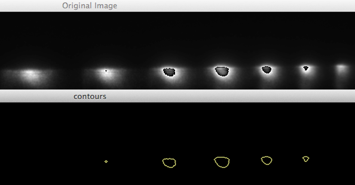
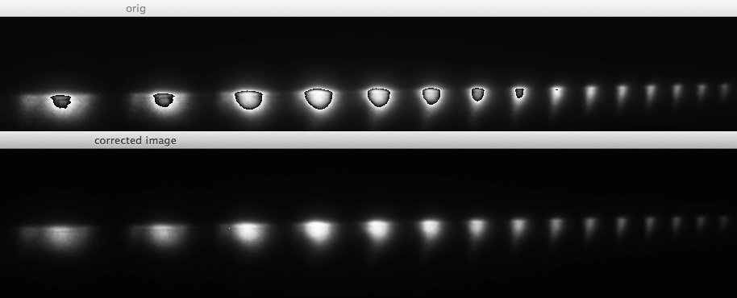

Here is a collection of other useful modules and functions that come with HHG-Analysis-Python:
This module can find overflow areas in images (“blobs”). It makes heavy use of OpenCV.
Find second level contours in 16bit images
Here is an example to illustrate the contours of the blob this function can find:
This function can fix images where blobs have been found using find_blobs().
Here is an example of what this does:
A collection of useful mathematical tools and functions.
Calculate the score at the given percentile per of the sequence a.
Largely the same as http://docs.scipy.org/doc/scipy/reference/generated/scipy.stats.scoreatpercentile.html .
A rectangle in 2-dimensional space.
The size (dimensions) of the rectangle.
Create a new rectangle that must be inside this rectangle. If it would overlap with this rectangle, it would be moved to the inside.
The position of the rectangle.
A collection of useful signal processing functions
A function to calculate the sum of a selection of values from which a baseline value has been substracted.
A Low-pass filter. See http://en.wikipedia.org/wiki/Low-pass_filter . :param cutoff: defines the limit at which higher frequencies should be removed (from 0. to 100.). :type cutoff: float.
A module that implements the useful Savitzky–Golay filter. See http://en.wikipedia.org/wiki/Savitzky%E2%80%93Golay_smoothing_filter .
Calculates filter coefficients for symmetric Savitzky–Golay filter. see: http://www.nrbook.com/a/bookcpdf/c14-8.pdf
| Parameters: |
|
|---|---|
| Returns: | numpy.array – The coefficients for the Savitzky–Golay filter. |
Applies coefficients calculated by calc_coeff() to signal.